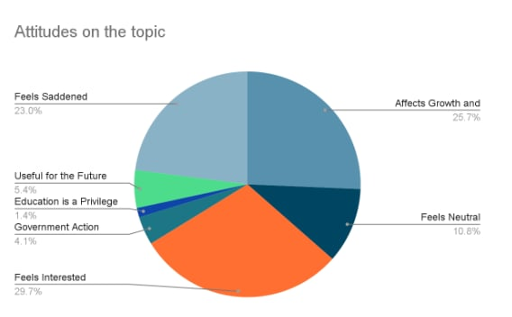

Affects Growth and Development: 25.7% of
the respondents think that the financial instability could affect there fellow students potential to be successful,
and their future.
Feels Neutral: 10.8% of the respondents had an neutral attitude towards the topic.
Feels Interested: 29.7% of the respondents felt interested in the topic.
Government Action: 4.1% of the respondents expressed hope that the government
will take action on the issue so that everyone will experience educational equity.
Education is a Privilege: 1.4% of the respondents realized that that education is privilege to have.
Useful for the Future: 5.4% of the respondents expressed that the topic can be useful for the future
and that it is eye-opening.
Feels Saddened: 23.0% have also expressed that they are saddened, concerned, and worried about the
students affected by the topic.